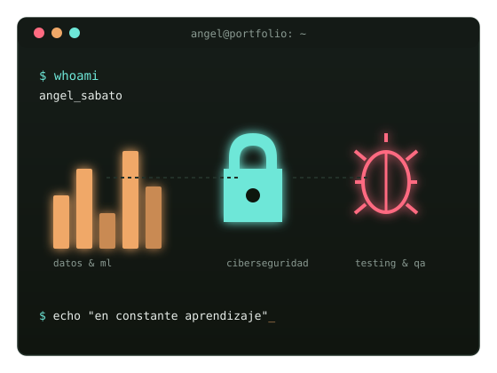

$ whoami
Ángel Sabato
$ cat intereses.txt
Mi nombre es Ángel Sabato. Estoy interesado en distintas áreas vinculadas al desarrollo de software, desde Ciencia de Datos y Machine Learning hasta el Testing y la Ciberseguridad.
$

$ whoami --verbose
Sobre mí
Estudio la Tecnicatura Superior en Desarrollo de Software y la Licenciatura en Ciberdefensa. Me interesa entender un problema desde varios ángulos: cómo se modelan los datos, cómo se prueba que un sistema funciona y cómo se protege de lo que puede salir mal.
$ cat skills.json
Tecnologías
Lenguajes
- Python
- TypeScript
- C#
- Kotlin
Frontend & frameworks
- HTML
- CSS
- Tailwind
- Next.js
- Astro
- Svelte
- MDX
Backend & runtime
- Node.js
Datos & machine learning
- Jupyter Notebook
- Pandas
- NumPy
- Matplotlib
- Seaborn
- Plotly
- Scikit-learn
- Quarto
- TeX
- Groq
- Hugging Face
Testing & automatización
- Selenium
- Scrapy
Bases de datos
- SQLite
- PostgreSQL
- MySQL
- Neon Postgres
- Supabase
Herramientas & entornos
- Git
- VS Code
- Visual Studio
- Android Studio
$ git log --formacion-continua
Formación continua
-
2° cuatrimestre 2023
PCAP – Programming Essentials in Python
Centro de Formación Profesional N° 36
-
1° cuatrimestre 2024
Big Data / Data Analytics
Codo a Codo
-
2° cuatrimestre 2024
Iniciación a la Programación con Python
Talento Tech
-
en cursoDesde marzo 2025
Tecnicatura Superior en Desarrollo de Software
Instituto de Formación Técnica Superior N° 29
-
2° cuatrimestre 2025
Automation Testing
Talento Tech
-
2° cuatrimestre 2025
Testing QA
Talento Tech
-
en cursoDesde febrero 2026
Licenciatura en Ciberdefensa
Facultad de la Defensa Nacional
-
1° cuatrimestre 2026
Machine Learning
Talento Tech
$ contact --send
Contacto
¿Querés escribirme por un proyecto, una consulta académica o simplemente para charlar sobre datos, testing o seguridad? Completá el formulario.
También me encontrás en:
github.com/SabatoCom24212